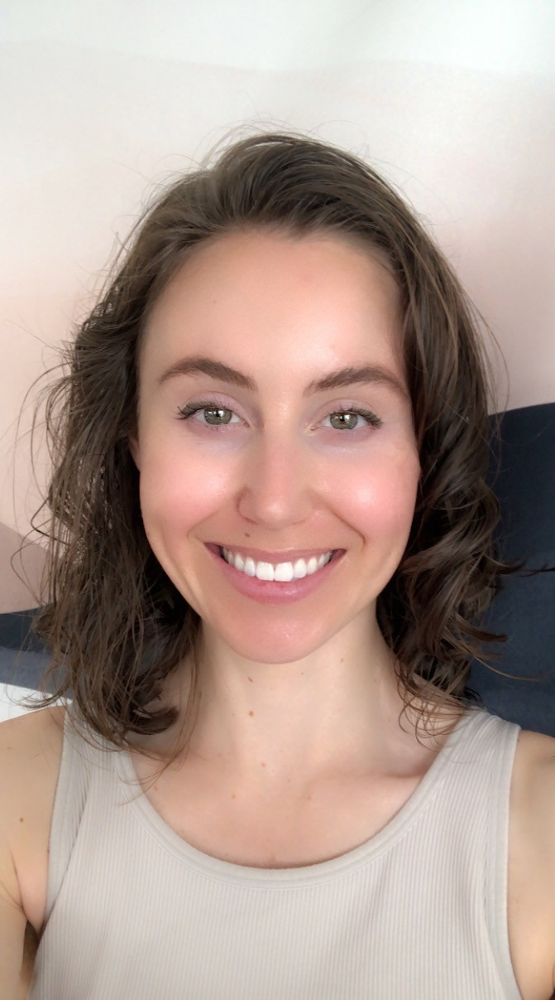

Thank you for visiting my homepage.
I earned a B.Sc. in Geophysics with distinction from the University of British Columbia, 2014. I did field work near the Kaskawulsh glacier in the Yukon Territory, Canada, with Christian Schoof, and built a numerial model of the overturning circulation in the Arctic Ocean with Susan Allen as an undergraduate researcher. Mark Jellinek inspired my interest in thermal convection of terrestrial planets, supercontinent cycles, and superplumes, and this is what led to my pusuit of a PhD in geodynamics with Shijie Zhong.
At the University of Colorado Boulder, I earned a PhD in Geophysics in 2021 with special focus on geodynamics. I used numerical models of thermal convection and viscoelatic deformation to contribute a response to the question: why is Earth the only terrestrial planet with plate tectonics? This question is particularly interesting because of the implications for habitability, where plate tectonics efficiently recycles heat between the surface and the deep interior of a planet. This allows convection in the core to be vigorous enough to sustain a magnetic field, which protects the atmosphere from being ablated away by the solar wind, which allows liquid water to exist on the surface, and builds all the mountain ranges and ocean basins.
I then won a fellowship to continue investigating the structure and dynamics of the deep Earth at Masschusetts Institute of Technology with Wiki Royden. I worked on a global reference frame problem and we completed a cute study on hotspot motions and the dynamics of the large low shear velocity provinces before I moved back to Boulder for family reasons.
Now, I am a postdoc with Steve Nerem. I use satellite observations and numerical models to quantify, understand, and extrapolate cliamte change through the lens of sea level change and ice mass loss at ice sheets and glaciers. I model the glacial isostatic adjustment of the Earth's surface to the loss of massive ice sheets following the last glacial maximum, and compute the graviational, deformational and rotational response of the Earth to present-day ice mass changes.
Please reach out if you see a potential for us to collaborate!
Ann and H.J. Smead Department of Aerospace Engineering Sciences
Colorado Center for Astrodynamics Research
University of Colorado, Boulder
ashley.bellas (at) colorado (dot) edu